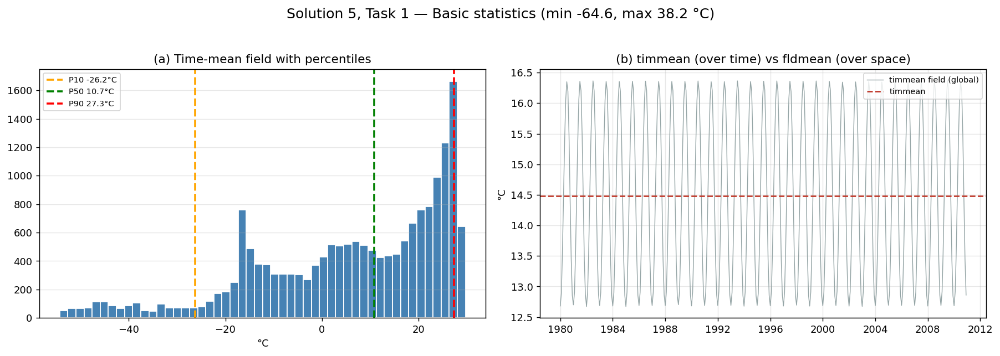
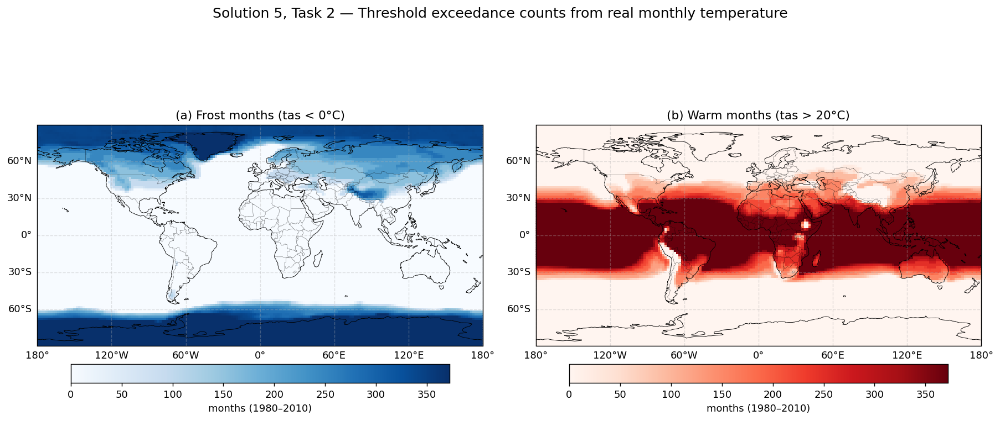
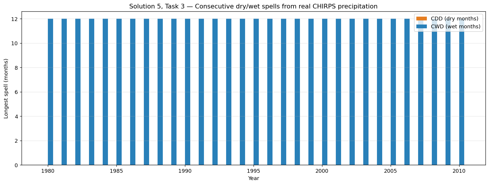
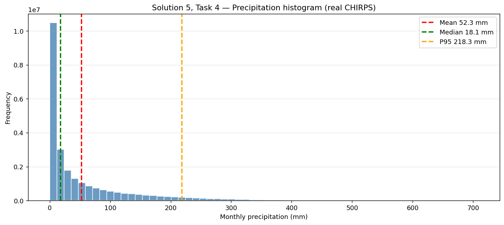
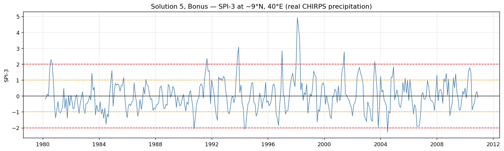

Solution 5: Statistics and Climate Indices#
Task 1: Basic Statistics#
Commands:#
cdo timmean ../datasets/tas_sample.nc tas_timmean.nc
cdo timstd ../datasets/tas_sample.nc tas_timstd.nc
cdo timmin ../datasets/tas_sample.nc tas_timmin.nc
cdo timmax ../datasets/tas_sample.nc tas_timmax.nc
cdo timpctl,10 ../datasets/tas_sample.nc tas_timmin.nc tas_timmax.nc tas_p10.nc
cdo timpctl,50 ../datasets/tas_sample.nc tas_timmin.nc tas_timmax.nc tas_p50.nc
cdo timpctl,90 ../datasets/tas_sample.nc tas_timmin.nc tas_timmax.nc tas_p90.nc
Answers:#
Three inputs for
timpctl:Input data field (the dataset)
Minimum field (
timmin— the minimum value at each grid point)Maximum field (
timmax— the maximum value at each grid point)The min/max are needed as bounds for the percentile calculation algorithm.
Median operator: The median is the 50th percentile:
cdo timpctl,50 input.nc min.nc max.nc median.ncSpatial percentiles: Use
fldpctl(spatial percentile across grid cells):cdo fldpctl,90 input.nctimmeanvsfldmean:timmean: average over time at each grid point → spatial fieldfldmean: average over space at each time step → time series

Fig. 35 Time-mean temperature distribution with the 10th, 50th and 90th percentiles, and the global mean time series.#
Task 2: Frost Days and Tropical Nights#
Commands:#
cdo lt,273.15 ../datasets/tas_sample.nc tas_below_0C.nc
cdo yearsum tas_below_0C.nc tas_frost_months.nc
cdo gt,293.15 ../datasets/tas_sample.nc tas_above_20C.nc
cdo yearsum tas_above_20C.nc tas_tropical_months.nc
Answers:#
Monthly data bias for frost days: Monthly means smooth out sub-monthly variability. A month with both frost and thaw days can have a mean above 0°C, so frost days would be underestimated.
More accurate frost days from monthly data: Use diurnal temperature range or minimum temperature if available (
tasmin). With onlytas, apply a statistical correction or use a higher threshold (e.g., monthly mean < 1°C as proxy).Operator for consecutive threshold exceedance:
consects(consecutive streaks of true values in a binary field).Standard temperature thresholds:
Ice days:
tasmax < 0°C(273.15 K) — daily maximum below freezingSummer days:
tasmax > 25°C(298.15 K) — daily maximum above 25°CGrowing season length: Number of days with
tas > 5°C(278.15 K) for at least 6 consecutive days

Fig. 36 Counts of frost months (tas < 0 °C) and warm months (tas > 20 °C) from real reanalysis data.#
Task 3: Consecutive Dry Days (CDD) and Consecutive Wet Days (CWD)#
Commands:#
cdo lt,1.0 ../datasets/pr_sample.nc pr_dry.nc
cdo ge,1.0 ../datasets/pr_sample.nc pr_wet.nc
cdo consects pr_dry.nc pr_cdd.nc
cdo consects pr_wet.nc pr_cwd.nc
Answers:#
What
consectscomputes: For each grid cell, it computes the length of the longest consecutive sequence oftrue(1) values in the binary mask. For dry days, it’s the longest dry spell.Maximum CDD per year:
cdo yearmax pr_cdd.ncTypical wet day threshold: 1 mm/day is the most common. The IPCC uses 1 mm/day for most indices. Some studies use 0.1 mm/day for very arid regions.
0.1 vs 1.0 mm/day threshold: A lower threshold (0.1 mm/day) produces longer wet spells and shorter dry spells. CDD decreases, CWD increases.
Dry vs wet spell comparison:
Dry spells (CDD) tend to be longer, especially in arid regions and dry seasons
Wet spells (CWD) are typically shorter, often 3–7 days in most climates
The difference is most pronounced in monsoon and Mediterranean climates

Fig. 37 Longest consecutive dry and wet spells per year from real CHIRPS monthly precipitation.#
Task 4: Create Histograms of Precipitation#
Python code:#
import xarray as xr; import matplotlib.pyplot as plt; import numpy as np
ds = xr.open_dataset('../datasets/pr_sample.nc')
pr = ds['pr'].values.flatten()
pr = pr[~np.isnan(pr)]
plt.figure(figsize=(10, 5))
plt.hist(pr, bins=50, color='steelblue', edgecolor='white', alpha=0.7)
plt.xlabel('Precipitation (mm/day)'); plt.ylabel('Frequency')
plt.title('Histogram of Monthly Precipitation (Global)')
plt.grid(alpha=0.3)
plt.axvline(np.mean(pr), color='red', ls='--', label=f'Mean: {np.mean(pr):.2f}')
plt.axvline(np.median(pr), color='green', ls='--', label=f'Median: {np.median(pr):.2f}')
plt.legend(); plt.tight_layout(); plt.savefig('precip_histogram.png', dpi=150)
Answers:#
Positive skew of precipitation: Precipitation is bounded at zero (cannot be negative) and has a long tail of high values from extreme rainfall events. Most days/months have little or no precipitation, while a few have very high amounts.
Fraction below 1 mm/day: Typically 60–80% of global grid-month values are below 1 mm/day, reflecting the large dry areas (deserts, polar regions) and dry seasons.
95th percentile: (Will vary by dataset, typically 5–15 mm/day for monthly data). Compute with:
np.percentile(pr, 95)Tropical vs mid-latitude distributions:
Tropics: Higher mean, narrower distribution (wet year-round in many areas)
Mid-latitudes: Lower mean but wider distribution (distinct wet/dry seasons)
Subtropics: Highly skewed with many dry values and few wet events

Fig. 38 Histogram of real CHIRPS monthly precipitation with mean, median and 95th percentile marked.#
Bonus Challenge: Standardized Precipitation Index (SPI)#
Commands:#
cdo runsum,3 -monsum ../datasets/pr_sample.nc pr_runsum3.nc
cdo sub pr_runsum3.nc -timmean pr_runsum3.nc pr_spi_anom.nc
cdo div pr_spi_anom.nc -timstd pr_runsum3.nc pr_spi3.nc
Drought month count:#
cdo lt,-1.0 pr_spi3.nc pr_drought_mask.nc
cdo fldmean -timsum pr_drought_mask.nc
SPI classification:#
SPI Value |
Category |
|---|---|
> 2.0 |
Extremely wet |
1.5 to 2.0 |
Severely wet |
1.0 to 1.5 |
Moderately wet |
-1.0 to 1.0 |
Near normal |
-1.5 to -1.0 |
Moderately dry |
-2.0 to -1.5 |
Severely dry |
< -2.0 |
Extremely dry |
Python plot for a grid cell:#
ds = xr.open_dataset('pr_spi3.nc')
spi = ds['pr'].isel(lat=45, lon=0)
plt.figure(figsize=(12, 3))
spi.plot(color='steelblue')
plt.axhline(-1, color='orange', ls='--')
plt.axhline(-2, color='red', ls='--')
plt.axhline(1, color='orange', ls='--')
plt.axhline(2, color='red', ls='--')
plt.title('SPI-3 at (0°E, 45°N)')
plt.tight_layout(); plt.savefig('spi3_timeseries.png', dpi=150)

Fig. 39 SPI-3 at approximately 9°N, 40°E with drought and wet-category thresholds, from real CHIRPS data.#